Jenkins
Execute os passos abaixo para configuração do Jenkins
Criando a máquina
Nome: Jenkins Máquina SO: Ubuntu Server 22.04 LTS amd64 Máquina Type: T2 Small
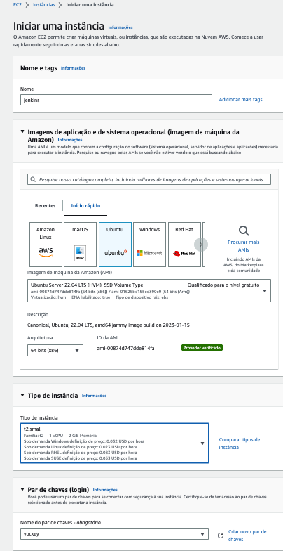Instância
Logo em seguida aguarde a instância ficar disponível
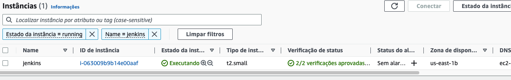Criar IP
Precisamos criar um IP Elástico (Externo)
Conforme a imagem abaixo clique no menu Rede e Segurança -> Ip´s Elasticos
clique em Alocar endereço IP elástico
Depois clique em Alocar
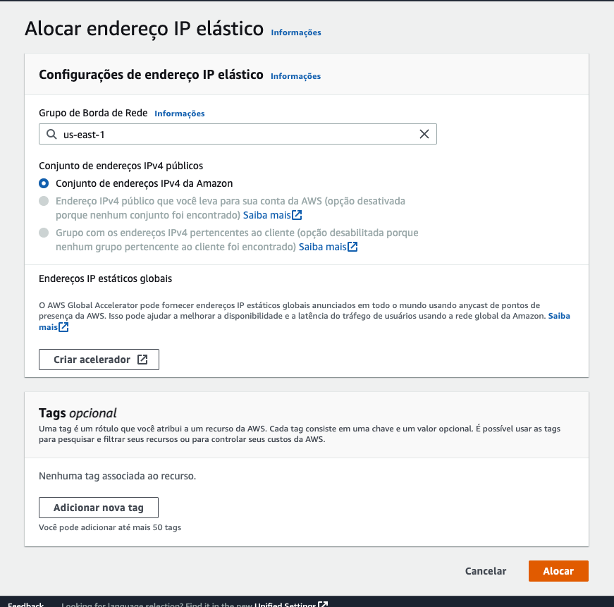verifique o ip atribuido
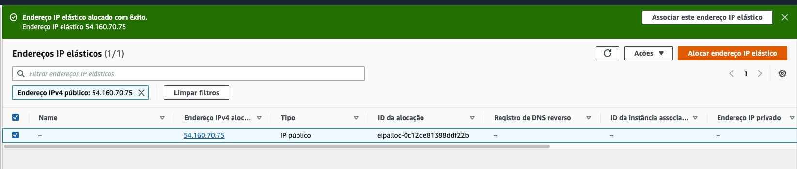Associar IP
Agora precisamos associar esse IP a instância do Jenkins
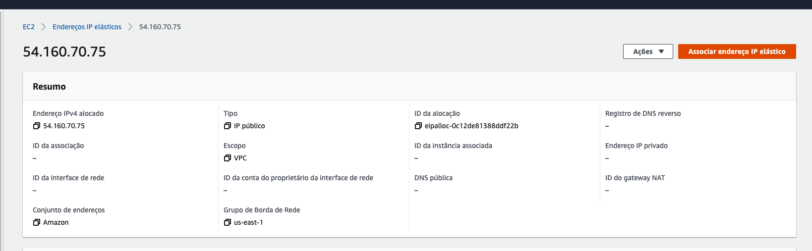Escolha a instância do Jenkins na lista de Instâncias e clique em Associar
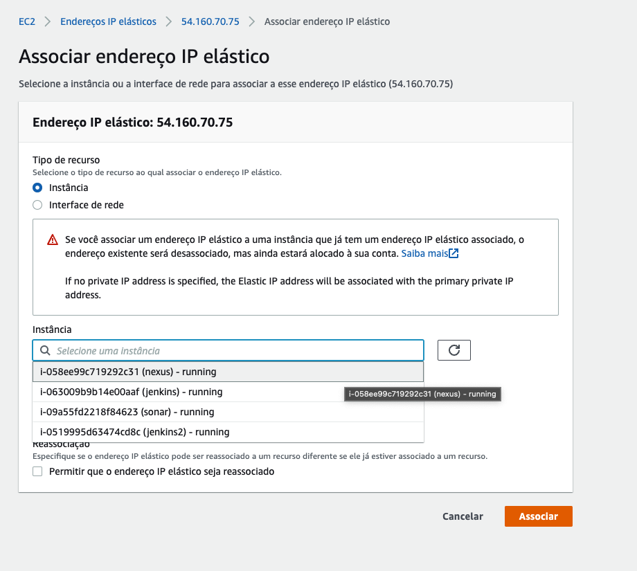Regras de Segurança
Para acessar as regras de segurança acessse o menu Rede e Segurança -> Grupo
Então vá no menu Rede e Segurança -> e selecione o grupo de segurança designado para a instância do Jenkins
no menu Ações selecione Editar Regras de Entrada
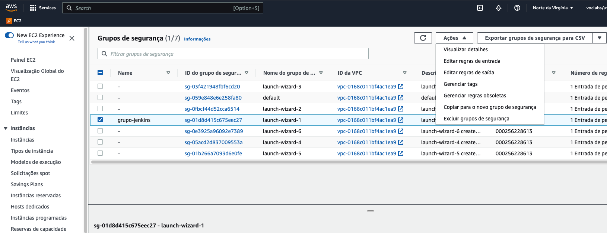Precisamos liberar as portas do jenkins por se tratar de apenas um exercício vamos liberar todas as portas, mas se atente em liberar apenas as portas necessárias.
Então para isso Troque o valor da regra de entrada para aceitar todas as entradas conforme abaixo e clique em Salvar Regras
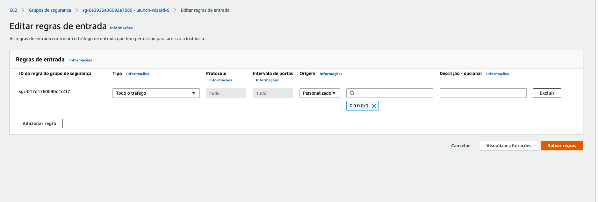Acessando a instância
Selecione a instância do Jenkins clique em Conectar
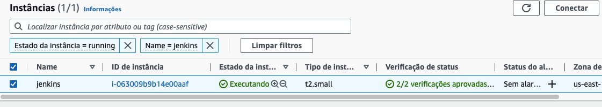Informe o usuário no campo como root depois clique em Conectar
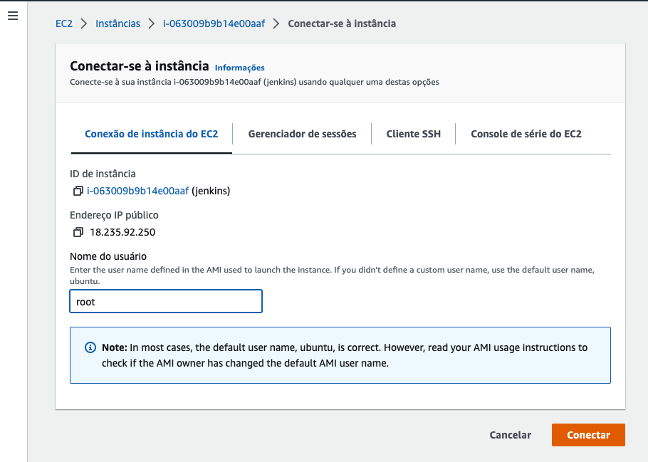Instalando o Jenkins
#Instalando JDK
apt update
apt install openjdk-11-jdk
java -version
#Add repositório Jenkins
curl -fsSL https://pkg.jenkins.io/debian-stable/jenkins.io.key | sudo tee /usr/share/keyrings/jenkins-keyring.asc > /dev/null
echo deb [signed-by=/usr/share/keyrings/jenkins-keyring.asc] https://pkg.jenkins.io/debian-stable binary/ | sudo tee /etc/apt/sources.list.d/jenkins.list > /dev/null
#Instalando Jenkins
apt update
apt install jenkins -y
#Habilitar serviço Jenkins
systemctl enable --now jenkins
systemctl status jenkins
#Liberar a porta do Jenkins
ufw allow 8080
#Instalar Docker
apt install apt-transport-https curl gnupg-agent ca-certificates software-properties-common -y
curl -fsSL https://download.docker.com/linux/ubuntu/gpg | sudo apt-key add -
add-apt-repository "deb [arch=amd64] https://download.docker.com/linux/ubuntu focal stable"
apt install docker-ce docker-ce-cli containerd.io -y
chmod 777 /var/run/docker.sock
docker ps
#Visualizar token de instalação do Jenkins
cat /var/lib/jenkins/secrets/initialAdminPassword
#copie o token para um arquivo iremos usalo logo adiante
Acessando o Jenkins
Pelo IP apresentado na instância como abaixo
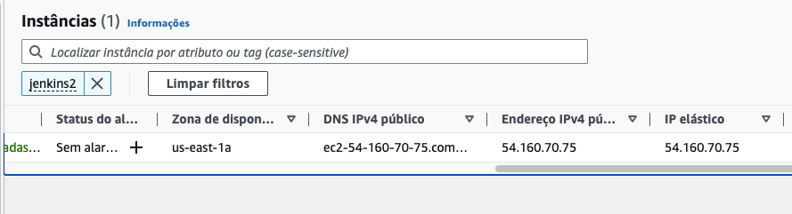Acesse no seu browser o endereço
http://{ip da instancia}:8080
Então informe o token previamente copiado
Escolhendo modo de Instalação
Escolha a opção "Select plugins to install
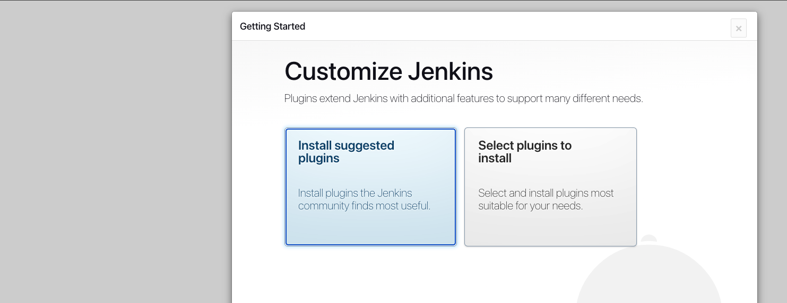Instalando Plugins
Selecione na lista o plugin SSH Agent
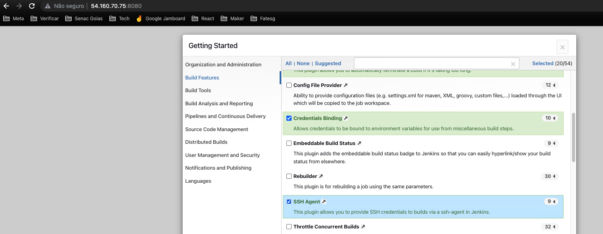Depois clique em Install
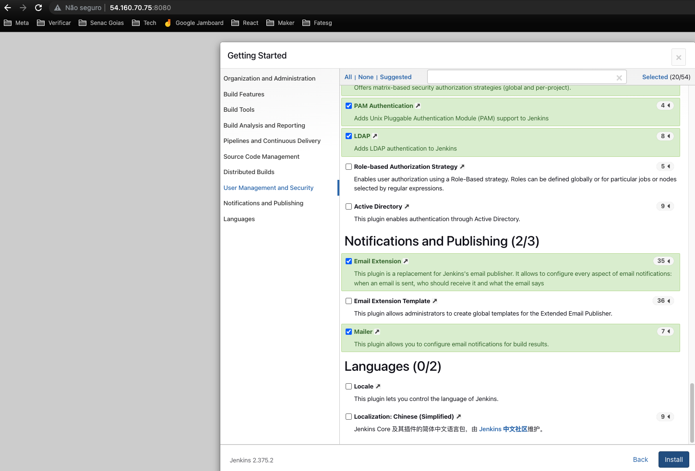Aguarde o fim da instalação
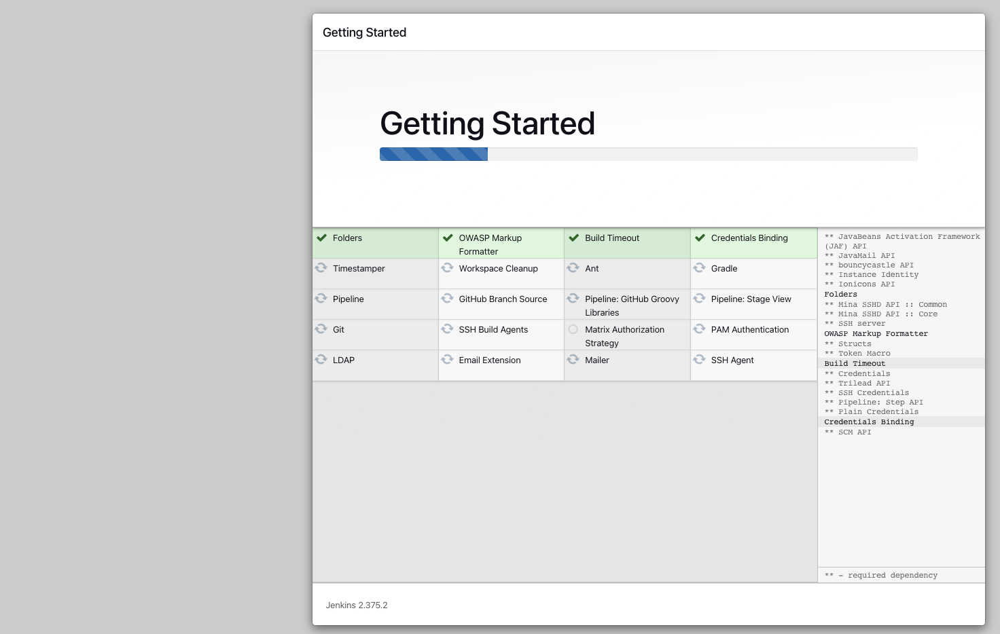Criando Usuário Admin
Para facilitar informe o usuário como: admin Informe uma senha (não esqueça essa senha) Informe o nome como Administrador Informe um email
Url Jenkins
Como não temos um domínio registrado vamos por ip mesmo então informe o endereço do jenkins como http://{ip da instância}:8080/
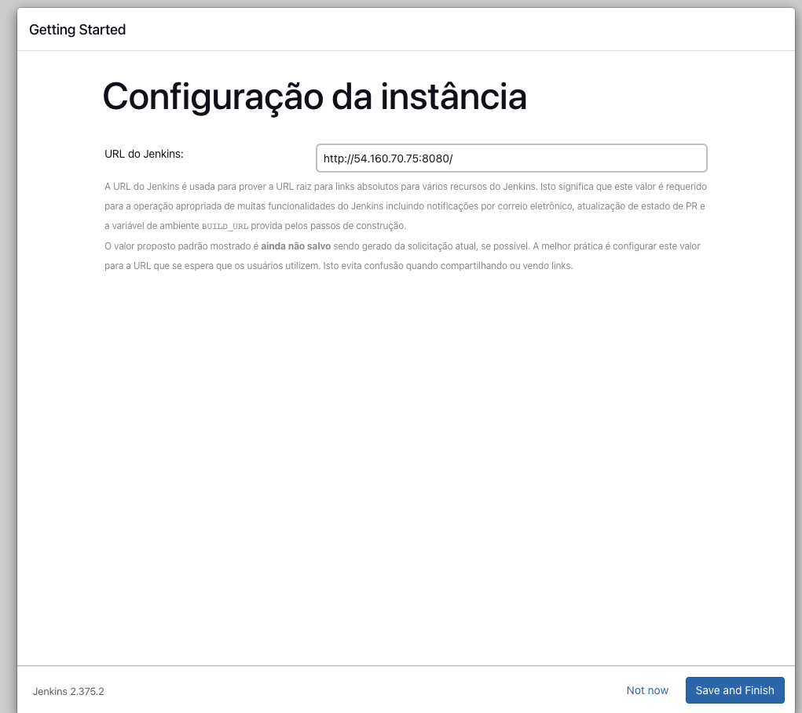Finalizamos a instalação
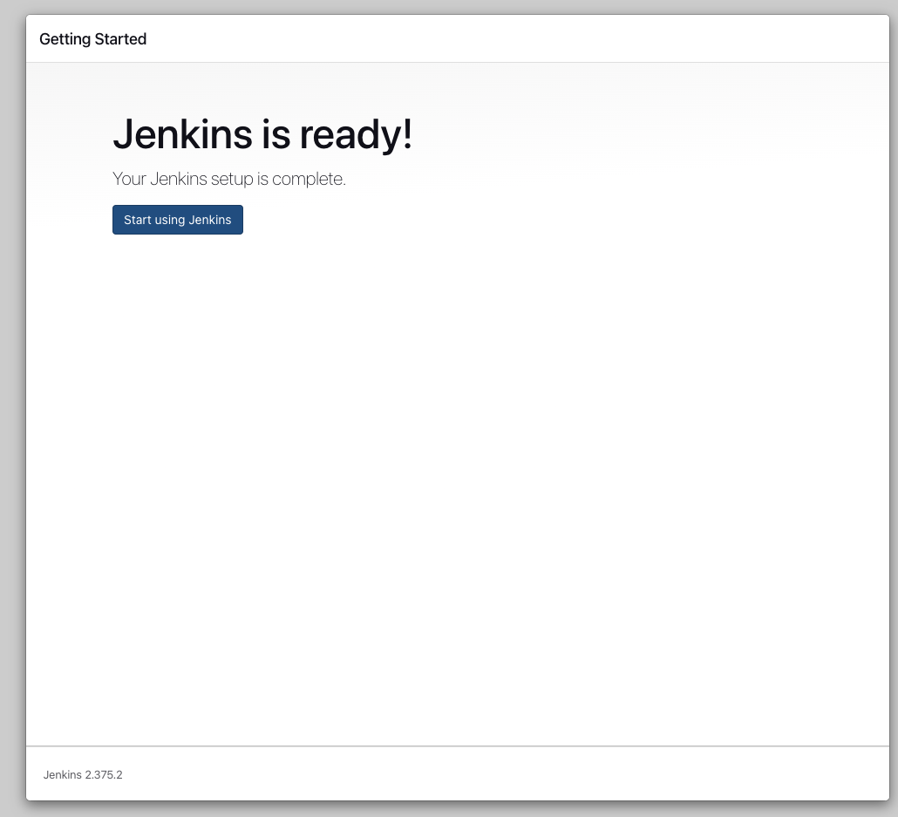Clique em Start using Jenkins
Configurando Ferramentas
No Menu do Jenkins Acesse Painel de Controle -> Gerenciar Jenkins
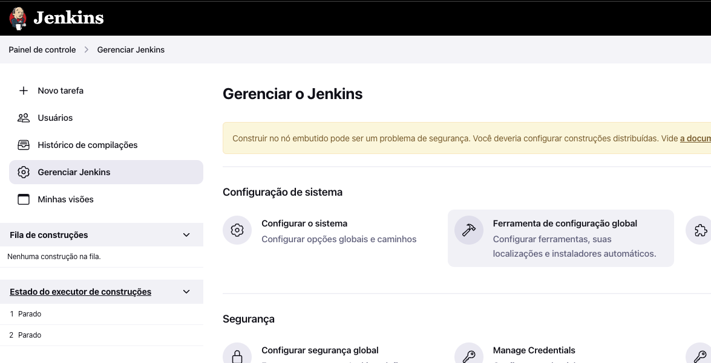Clique em Ferramenta de configuração global
Configurando JDK
Procure o texto JDK e clique em JDK Instalações
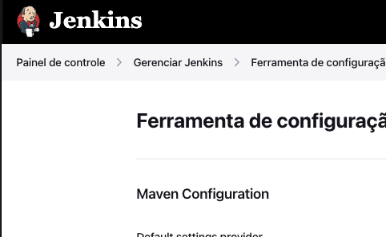Desmarque a opção Instalar automaticamente No campo Nome informe exatamente jdk-11 No campo JAVA_HOME informe exatamente /usr/lib/jvm/java-11-openjdk-amd64
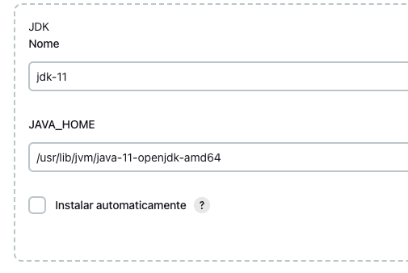Configurando o Maven
Procure abaixo o Texto Maven e clique em Adicionar Maven Selecione a opção Instalar automaticamente(tem que ficar marcado) No campo Nome informe exatamente M3 No campo versão escolha 3.8.7
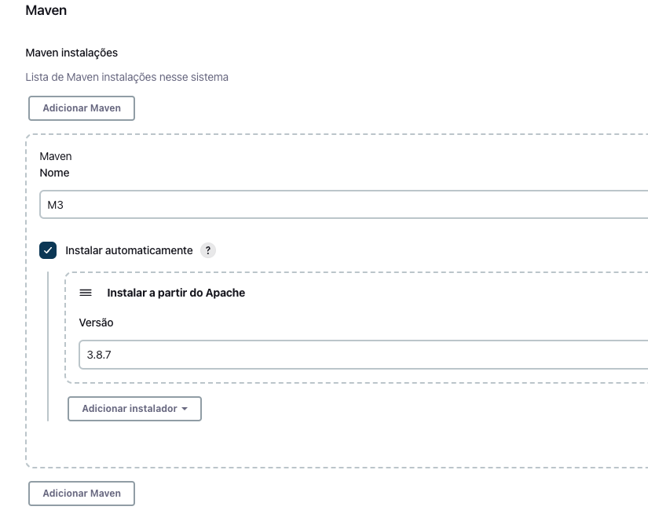Pronto por enquanto finalizamos as configurações do Jenkins